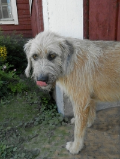
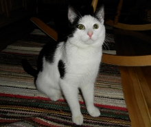
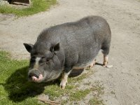
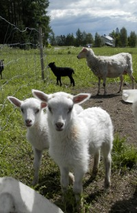
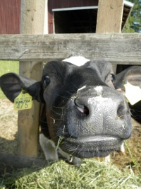
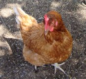
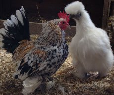

Maatilan eläimet

Pluto koira
Pluto on sekarotuinen "Espanjan poika".
Se löysi kodin Koski-Tuurista 2012
eläinsuojeluyhdistyksen kautta ja omaa persoonallisen luonteen. Pluto tulee
hyvin toimeen niin eläinten kuin ihan pientenkin lasten kanssa. On luoteeltaan
hyvin kiltti mutta osaa olla myös leikkisä ja villipoika. Pluto rakastaa rapsutuksia,
on kova pusuttelemaan, nauttii autoajeluista ja haluaa olla aina menossa mukana.
Velmu kissa

Velmu on Koski-Tuurin uusin tulokas. Se tuli tilalle syksyllä 2014 ja valloitti
suloisella luonteellaan kaikki. Tämä erityisen ihmisläheinen poikakissa nauttii silittelystä
ja viihtyy varsinkin emännän sylissä.
Velmu on uskomattoman kiltti sekä kärsivällinen nuoreksi
kissaksi. Toki se villi ja leikkisä puolikin löytyy myös tästä ihanasta kissapojasta.
Velmu viihtyy enimmäkseen sisällä mutta tykkää myös tehdä tutkimusmatkoja ulkona. Kissa on Pluton hyvä kaveri.

Aatto Possu
Aatto on Mikrosika. Toki mitat vastaavat jo miniporsasta.
Rotua kutsutaan myös Vietnamilaiseksi roikkovatsa siaksi.
Se tuli Koski-Tuurin maatilalle vuonna 2013 Juhannuksen aikaan ihan pienenä possuna.
Aatto tervehtii Röf-Nöf äänellä.
Se saa kesäisin liikkua tilalla vapaana. Välillä se palaa takaisin omaan poikamies
boksiinsa lepäämään olkien alle. Talvisin Aatto viettää aikansa joko navetassa hiehojen
ja vasikoiden seurassa tai ulkorakennuksessa lampaat kavereina. Silittämistä ei suositella ilman emännän läsnäoloa, koska Aatto on herkkä possu ja voi hermostua jos menee liian lähelle.
Uuhet pässit & karitsat

Kesäisin lampaat laiduntavat laumassa aitauksissaan. Ne tulevat luokse jos mukanasi on jotain naposteltavaa.
Osa lampaista on hyvin kesyjä, joten ne tahtovat huomiota ja hellyyttä juttelun, silittelyn ja rapsutuksen muodossa.
Pienet karitsat syntyvät aina alkukesästä, mutta kasvavat hurjan nopeasti kesän aikana.
Talvisin lampaat asustavat ulkorakennuksissa.

Hiehot ja vasikat
Maatila toimii nykyisin hiehojen kasvatustilana. Kesäisin nautakarjalla on mahdollisuus laiduntaa pellolla ja kulkea vapaana aitauksissaan.
Ne pääsevät tarvittessa suojaan pihattoon pois kuumasta auringon valosta.
Hiehot ja vasikat ovat monesti uutta tuttavuutta kohden ensin arkoja.
Tutustuttuaan voi saada lipaisuja karheasta kielestä.
Talvisin hiehot ja vasikat asustavat navetassa.

Kanat ja kukko
Kanaparvi ja kukko ovat kuuluneet Koski-Tuuriin läpi tilan historian. Tilan punertavan ruskeat kanat munivat vaalean ruskeita munia.
Kana munii normaalisti yhden munan päivässä.
Kanat munivat koppeihinsa, josta munat kerätään päivittäin tilan omaan käyttöön.
Lapset sekä aikuisetkin voivat halutessaan ja emännän luvalla päästä osallistumaan tähän.

Silkkikana Lumi ja kääpiökukko Kieku ovat kanalan erikoisuudet.